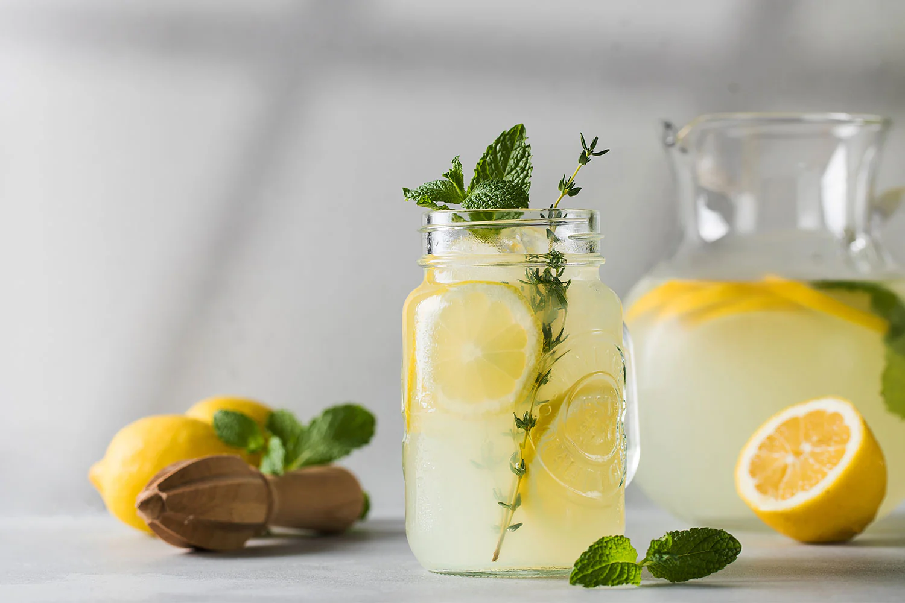

Limonada casera
Refrescante y natural

Ingredientes
4 limones
1 litro de agua
Azúcar al gusto
Preparación
Exprimir los limones, mezclar con agua y azúcar.
Servir con hielo y rodajas de limón.
← Volver a Bebidas